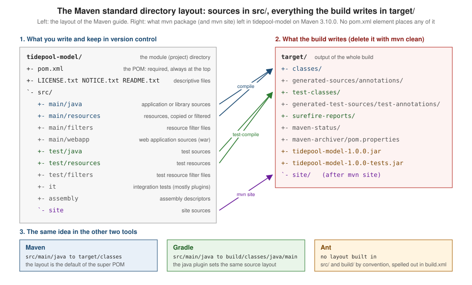

Maven: Philosophy, Coordinates & Directory Layout
|
This content was generated with the assistance of AI and should be verified against the official documentation before being relied on in production. |
This page is written against Apache Maven 3.10.0 (released on 27 September 2026). Every example marked as run was executed on JDK 26
on 2026-10-16, on macOS, in a scratch directory, with Maven 3.10.0 unless the text names another version; the 3.9.16 and 4.0.0-rc-7
runs are called out where their behaviour differs. Output is shown as printed, with the long scratch path shortened to <scratch> or
<module>. The examples use the running scenario of this section, tidepool (see the
section landing page), as a Maven build: a parent POM io.tidepool:tidepool-parent:1.0.0
that aggregates tidepool-model, tidepool-engine and tidepool-cli.
Maven is the tool of the three in this section that asks the most of the project and gives the most back for it. Almost everything it
does follows from two ideas: a project describes what it is (its coordinates, its dependencies, its packaging) rather than how to build
it, and every project is laid out in the same way unless it says otherwise. This page covers those two ideas, the vocabulary that
goes with them, and what to do when a project cannot follow the layout. The next pages build on it:
Getting Started runs a first project end to end,
POM Fundamentals goes through the POM element by element, and
Build Lifecycle explains what mvn package actually runs.
The ideas behind every build tool, not only Maven, are in
Build Automation Fundamentals, and the dependency side of
coordinates is in Dependency Management Fundamentals.
Maven’s objectives
The Maven site states the goal in one sentence: to allow a developer to organise and build a Java project in the shortest period of time. It says Maven pursues that in four ways, and each one is visible in how the tool behaves:
-
Making the build process easy. Maven does not remove the need to understand compilation, packaging or testing, but it hides the mechanics. A project that follows the defaults has a POM of about fifteen lines (the generated one on the Getting Started page).
-
Providing a uniform build system. A build is the POM (the project object model) plus a set of plugins. Once you know how one Maven project builds, you know how all of them build:
mvn packagemeans the same thing in every repository. -
Providing quality project information. The same metadata drives reports and a project site: dependencies, test results, a change log from source control, cross-referenced sources, mailing lists. Third-party analysis tools add their reports through plugins.
-
Encouraging better development practices. The tool takes opinions: test sources in a separate but parallel tree, test classes found by a naming convention, test cases that set up their own environment instead of the build preparing it. It also suggests how to lay out a project so that anyone can navigate it.
The same page is candid about the cost. Maven takes an opinionated approach to layout, some projects cannot fit it for historical reasons, and the site says that a project with an unusual structure that cannot be reorganised may have to give up some features, or Maven altogether. That statement is the honest summary of the trade-off: Maven’s value is in the conventions, and the more a project departs from them the less value the tool returns. The last section of this page shows how far a departure can go in practice.
The name is a Yiddish word meaning accumulator of knowledge, and the project began as an attempt to simplify the build processes of the Jakarta Turbine project: several projects, each with its own slightly different Ant build files, with JARs checked into CVS. The wish was for a standard way to build them, a clear definition of what a project consists of, an easy way to publish project information and a way to share JARs across projects. The tool grew from there into what the release history traces from Maven 1.0 (2004) to Maven 3.10.0 and the Maven 4 release candidates.
What Maven is not
The Maven site names three things people say about Maven that are true but miss the point: that it is a site and documentation tool, that it extends Ant to download dependencies, and that it is a set of reusable Ant scriptlets. Maven does all three, but its objectives are different, and treating it as "Ant with downloads" leads to build files that fight the tool. The practical consequence is the mental switch on which the rest of this section depends: in Ant you write targets that do things, in Maven you declare the project and bind plugin goals to a fixed lifecycle. The comparison page puts the three models side by side.
The feature summary
The "feature summary" of the Maven site is a list of claims; reading it as a list of things you can rely on and where each one is covered in this section is more useful than repeating it:
| Claim on the Maven site | What it means in practice | Where it is covered |
|---|---|---|
Simple project setup that follows best practices |
archetypes and the standard layout give a new module in seconds |
|
Consistent usage across all projects |
the same commands and the same directories everywhere |
this page, Build Lifecycle |
Superior dependency management, including transitive dependencies |
a dependency declares its own dependencies in its POM, and Maven pulls the closure |
|
Working with multiple projects at the same time |
the reactor builds modules in dependency order |
|
A large repository of libraries and metadata |
Maven Central, plus mirrors and repository managers |
|
Extensible, with plugins in Java or scripting languages |
every piece of build behaviour is a plugin goal |
|
Ant tasks for dependency management and deployment outside Maven |
the Maven Resolver Ant Tasks |
|
Model-based builds into predefined output types (JAR, WAR, distribution) without scripting |
the |
|
A coherent site of project information from the same metadata |
the site lifecycle and the project-info reports |
|
Release management and distribution publication |
tag-driven releases and publishing to a repository |
Source: Maven: What is Maven Not?
Convention over configuration
"Convention over configuration" means the tool supplies a default for everything it can, so that a project states only what differs from
the default. In Maven the defaults live in a built-in parent that every POM inherits from, the super POM. The super POM fixes the
directory structure, the output directories and the final name of the artifact; the default lifecycle bindings (which plugin goal
runs in which phase for a jar project) are supplied separately by the packaging, and the
effective POM page shows how the two merge.
You can see the defaults without reading any documentation, by asking Maven to evaluate the expressions it will use. The
tidepool-model POM does not mention a single directory, yet:
for e in project.build.directory project.build.sourceDirectory project.build.testSourceDirectory \
project.build.outputDirectory project.build.testOutputDirectory project.build.scriptSourceDirectory \
project.build.finalName 'project.build.resources[0].directory' 'project.build.testResources[0].directory' \
project.reporting.outputDirectory; do
printf '%s = ' "$e"
mvn -q -B -ntp -pl tidepool-model help:evaluate -Dexpression="$e" -DforceStdout | tail -1; echo
doneproject.build.directory = <module>/target
project.build.sourceDirectory = <module>/src/main/java
project.build.testSourceDirectory = <module>/src/test/java
project.build.outputDirectory = <module>/target/classes
project.build.testOutputDirectory = <module>/target/test-classes
project.build.scriptSourceDirectory = <module>/src/main/scripts
project.build.finalName = tidepool-model-1.0.0
project.build.resources[0].directory = <module>/src/main/resources
project.build.testResources[0].directory = <module>/src/test/resources
project.reporting.outputDirectory = <module>/target/site(<module> stands for the scratch path of the tidepool-model directory.) Every value above comes from the super POM, and an
mvn help:effective-pom run on Maven 4.0.0-rc-7 prints the same directories, so the layout is stable across the lines.
The finalName is the artifact id and version joined by a hyphen, which is the file name convention that
the packaging page and the repository layout below both rely on.
The same effective POM also shows what Maven 3.10.0 changed in the defaults: the properties
project.build.sourceEncoding and project.reporting.outputEncoding are UTF-8, and project.build.outputTimestamp is
1980-02-01T00:00:00Z. That last property is why every entry of a JAR built by Maven 3.10.0 is dated 1980-02-01 (the unzip -l runs
on the Getting Started page show it): reproducible builds are on by default
in 3.10, and
Security & Reproducible Builds explains the mechanism.
The convention has a price, and it is worth stating plainly because it is the source of most "why does Maven do that" questions: the defaults are right for the common case and invisible. When a project needs something else, you override one element, and that override is the whole configuration. The last section of this page does exactly that for the directory layout.
How the other two tools compare
Gradle also follows conventions, but they come from plugins (the java plugin sets src/main/java and an output under build/)
rather than from a built-in parent, and a Gradle build file is a program that can change them freely. Ant has no convention at all:
every directory is a property you choose, and the layout recommended in the
Ant build file structure page (src, build, dist) is a habit, not a rule of the tool.
| Concept | Ant | Maven 3.10 | Gradle 9.8 |
|---|---|---|---|
Where the layout comes from |
nowhere; each build file declares its own properties |
the super POM, inherited by every POM |
the plugins applied (for example |
Main sources |
a property such as |
|
|
Test sources |
a property such as |
|
|
Compiled main classes |
a property such as |
|
|
All build output |
a property, by habit |
|
|
Identity of the project |
none built in; Ivy adds organisation, module and revision |
|
|
The Gradle side of the layout is in Java Projects.
The standard directory layout
The standard directory layout is the most visible convention. The Maven guide gives the reason in one sentence: a common layout lets a user who knows one Maven project feel at home in another, with the same advantages as a site-wide look and feel. It asks you to conform as far as you can, and says that where you cannot, the settings can be overridden in the project descriptor (the last section of this page).

The guide lists these directories:
| Path | Contents |
|---|---|
|
application or library sources |
|
application or library resources, copied to |
|
resource filter files |
|
web application sources |
|
test sources |
|
test resources, copied to |
|
test resource filter files |
|
integration tests, primarily for plugins |
|
assembly descriptors |
|
site sources |
|
the project’s license, the notices and attributions required by its dependencies, and its readme |
|
the project descriptor, at the top level |
The top level of a Maven project holds the pom.xml, the descriptive text files, and two directories at most: src and target. The
only others expected are version-control metadata (.git, .svn, CVS) and the subprojects of a multi-project build, each laid out the
same way. Under src there is a subdirectory per kind: main for the main artifact, test for unit test code and resources, site
and so on. Inside an artifact-producing directory (main and test) there is one directory for the language, java, under which
the normal package hierarchy exists, and one for resources, whose structure is copied as it is to the class path. Other contributing sources get their own
directory under the same parent: src/main/antlr would hold ANTLR grammar files, for instance. The target directory holds all
the output of the build.
Two details are not in the guide’s list but are visible in the runs. src/main/scripts is the default scriptSourceDirectory, shown by
the help:evaluate output above. And the Maven 4.0.0-rc-7 build of a project with a 4.1.0 POM model (the last section) logged
"skip non existing resourceDirectory" for a second default test resource directory, src/test/resources-filtered; the Maven 3.10.0 builds did not look for it.
The Maven 4 POM model page covers the model.
The tidepool module on disk
This is tidepool-model as it is checked into version control, produced by running find in the project and leaving out
target and compiled classes. It has exactly the directories it needs and no more. The only non-source files are the POM, and two
placeholder resource files for the demonstration:
./tidepool-model/pom.xml
./tidepool-model/src/main/java/io/tidepool/model/Constituent.java
./tidepool-model/src/main/java/io/tidepool/model/Height.java
./tidepool-model/src/main/java/io/tidepool/model/Station.java
./tidepool-model/src/main/java/io/tidepool/model/TideEvent.java
./tidepool-model/src/main/resources/model.properties
./tidepool-model/src/test/java/io/tidepool/model/HeightTest.java
./tidepool-model/src/test/resources/fixture.propertiesThe Java package directory (io/tidepool/model) is the package hierarchy; Maven does not require the group id to match it, but the
convention is the reverse domain name in both.
What the build writes: the target directory
After mvn clean package, tidepool-model/target holds this (listing from the run, abbreviated at the compiled .class files):
tidepool-model/target
tidepool-model/target/classes (1)
tidepool-model/target/classes/model.properties (2)
tidepool-model/target/generated-sources/annotations (3)
tidepool-model/target/generated-test-sources/test-annotations
tidepool-model/target/maven-archiver/pom.properties (4)
tidepool-model/target/maven-status/maven-compiler-plugin/... (5)
tidepool-model/target/surefire-reports/TEST-io.tidepool.model.HeightTest.xml
tidepool-model/target/surefire-reports/io.tidepool.model.HeightTest.txt
tidepool-model/target/test-classes
tidepool-model/target/test-classes/fixture.properties
tidepool-model/target/tidepool-model-1.0.0-tests.jar (6)
tidepool-model/target/tidepool-model-1.0.0.jar (7)| 1 | compiled main classes, src/main/java through the compiler plugin |
| 2 | a resource copied unchanged by the resources plugin |
| 3 | where annotation processors write generated sources, an empty directory here (it is where picocli’s processor would write in tidepool-cli) |
| 4 | the metadata the archiver used when it built the JAR |
| 5 | the compiler plugin’s incremental-build state (the files it compiled and the dependencies it saw) |
| 6 | the test classes as a JAR, because the module’s POM binds the jar plugin’s test-jar goal |
| 7 | the main artifact, named from finalName |
Everything in target is generated and is deleted by mvn clean (the clean plugin removes the build directory). That is why target
is always in .gitignore and why a clean build is the first thing to try when a build behaves strangely.
Gradle’s build directory and an Ant project’s build directory play the same role.
Coordinates
Maven identifies everything it handles by coordinates. The Maven site’s definition of an artifact is the clearest starting point: an
artifact is a file (a sequence of bytes) that can be addressed by its coordinates and which Maven downloads,
installs or deploys. Most artifacts are POMs and JARs, but an artifact can be any file; what makes it an artifact rather than "just a
file" is that it has coordinates and is therefore addressable. The tool uses the short form groupId:artifactId:version, or GAV,
although the real coordinates have more fields.
The six properties
| Property | Meaning | Default |
|---|---|---|
|
the project group; by convention a reversed domain name that you control |
none, required (inherited from the parent if not given) |
|
the artifact id, the base of the file name |
none, required |
|
the artifact version |
none, required (inherited from the parent if not given) |
|
the non-timestamped version, linked to |
same as |
|
an optional extra label that distinguishes artifacts built from the same POM ( |
empty |
|
the file extension |
|
baseVersion is the one that surprises people. For a release it is the same as version; for a snapshot it is the version without
the timestamp. The Maven page gives the example of the snapshot version 1.0-20220119.164608-1, whose base version is 1.0-SNAPSHOT.
The two are linked, derived from each other, and differ only for snapshots. This is easy to see by deploying the generated project
of the Getting Started page to a local file: repository, which
stands in for a remote one. The -DaltDeploymentRepository property takes id::url for the deploy plugin 3.x (the run used the pinned deploy
plugin 3.1.2):
mvn -B -ntp -DaltDeploymentRepository=local::file:../snaprepo deploy
find ../snaprepo -type f | sort | grep -v '\.sha\|\.md5'./com/mycompany/app/my-app/1.0-SNAPSHOT/maven-metadata.xml
./com/mycompany/app/my-app/1.0-SNAPSHOT/my-app-1.0-20261016.104005-1.jar
./com/mycompany/app/my-app/1.0-SNAPSHOT/my-app-1.0-20261016.104005-1.pom
./com/mycompany/app/my-app/maven-metadata.xmlThe directory is named by the base version (1.0-SNAPSHOT); the files carry the timestamped version (1.0-20261016.104005-1: the
UTC date and time of the deployment, then a build number). The maven-metadata.xml in that directory records the latest timestamp and
build number, which is how a consumer resolves "the latest 1.0-SNAPSHOT`". A plain `mvn install to the local repository keeps the
-SNAPSHOT name and does not timestamp, as the Getting Started page shows. The snapshot lifecycle is in
Versions, Snapshots & Ranges.
A word about uniqueness. GAV coordinates identify an artifact uniquely, but only within one repository: two repositories can hold different files with the same GAV (the Maven site says this is normal with mirrors), and when those files differ it can cause serious problems that go unnoticed. The practical rule is to never publish two different files under one GAV; the supply-chain consequences (checksums, signatures, repository managers that refuse overwrites) are in Supply-Chain Security.
Packaging
The fourth identifying label in a POM is packaging. With the address groupId:artifactId:version there is one more standard label, the packaging, which defaults to jar when it is not given. The core packaging values are pom,
jar, maven-plugin, ejb, war, ear and rar; they are Plexus role hints of the component role
org.apache.maven.lifecycle.mapping.LifecycleMapping, and each one defines the default list of goals bound to the lifecycle phases.
The packaging therefore decides what the build does, not what the file is called: a jar project runs the compiler, the surefire and
the jar plugins, a pom project (the tidepool-parent) runs almost nothing. The evaluate run of the engine module confirms the
inheritance rules that apply to coordinates and packaging:
project.groupId = io.tidepool
project.artifactId = tidepool-engine
project.version = 1.0.0
project.packaging = jar
project.parent.artifactId = tidepool-parenttidepool-engine/pom.xml declares no groupId or version of its own: both are inherited from the parent. This is also why the
coordinates computed for an artifact are taken from the effective POM, after inheritance.
Source: Maven: POM Reference, Packaging
Where an artifact is stored
Once installed, an artifact lives in a repository under a path computed from its coordinates: the group id with dots turned into
slashes, the artifact id, the version, then artifactId-version[-classifier].extension. The run of mvn install against a fresh,
private local repository (-Dmaven.repo.local) left this for the tidepool modules (checksum files hidden):
io/tidepool/tidepool-parent/1.0.0/tidepool-parent-1.0.0.pom
io/tidepool/tidepool-model/1.0.0/tidepool-model-1.0.0.jar
io/tidepool/tidepool-model/1.0.0/tidepool-model-1.0.0-tests.jar
io/tidepool/tidepool-model/1.0.0/tidepool-model-1.0.0.pom
io/tidepool/tidepool-model/maven-metadata-local.xml
io/tidepool/tidepool-engine/1.0.0/tidepool-engine-1.0.0.jar
io/tidepool/tidepool-engine/1.0.0/tidepool-engine-1.0.0.pom
io/tidepool/tidepool-cli/1.0.0/tidepool-cli-1.0.0.jar
io/tidepool/tidepool-cli/1.0.0/tidepool-cli-1.0.0.pom(_remote.repositories files, which record where each file came from, are left out, and so are the other maven-metadata-local.xml files.)
The parent POM is an artifact too, with the extension pom and no JAR: a child can be built only when its parent can be found. The local and
remote repository layouts, mirrors, and the checksum files are covered in
Repositories, Mirrors & Repository Managers; the
same layout is shared by Ant (through Ivy or the Resolver tasks) and Gradle, as shown in
Repositories & Publishing Across Tools.
Classifier, type and extension
A POM has no extension element on a dependency. It has type, which Maven uses to derive both the extension and, sometimes, the
classifier. The Maven site gives the full mapping for a dependency element: the groupId, artifactId and version map directly; the
classifier is the classifier element, or the one provided by the type handler; the extension is provided by the type handler, or equal
to the type value. Out of the box Maven Core defines eleven types, handled by ArtifactHandler components with the same names:
| Type | Extension | Classifier |
|---|---|---|
|
|
|
|
|
|
|
|
|
|
|
|
|
|
|
|
|
|
|
|
|
|
|
|
|
|
|
|
|
|
|
|
If a type is not one of these names, its value is used as the extension, and the
classifier is whatever the classifier element says: a <type>tar.gz</type> dependency has the extension tar.gz. Plugins and
extensions can add types.
The consequence, which the Maven site flags as surprising, is that one artifact can be described two ways. The tidepool-engine module
depends on the test classes of tidepool-model (a test JAR, published by the test-jar goal). Declared with the test-jar type, as the
module’s POM does:
<dependency>
<groupId>io.tidepool</groupId>
<artifactId>tidepool-model</artifactId>
<version>${project.version}</version>
<type>test-jar</type>
<scope>test</scope>
</dependency>mvn dependency:list -DincludeScope=test (dependency plugin 3.11.0) reports:
io.tidepool:tidepool-model:jar:1.0.0:compile -- module tidepool.model (auto)
org.apache.commons:commons-csv:jar:1.14.1:compile -- module org.apache.commons.csv
commons-io:commons-io:jar:2.20.0:compile -- module org.apache.commons.io
commons-codec:commons-codec:jar:1.19.0:compile -- module org.apache.commons.codec
io.tidepool:tidepool-model:test-jar:tests:1.0.0:test -- module tidepool.model (auto)(The run of the tidepool-engine module with its reactor dependency; the list was cut to the dependency lines.) Replacing
<type>test-jar</type> with <classifier>tests</classifier> gives the same file, and the list reports it as jar:tests:
io.tidepool:tidepool-model:jar:1.0.0:compile -- module tidepool.model (auto)
io.tidepool:tidepool-model:jar:tests:1.0.0:test -- module tidepool.model (auto)Adding an explicit <type>jar</type> next to the classifier gives exactly the same two lines. The artifact is the same
tidepool-model-1.0.0-tests.jar; only the way the type and classifier are printed differs (the first form prints the type
test-jar and the classifier tests, the second prints the type jar and the classifier tests). The Maven site recommends the explicit
classifier form for a plain JAR with a classifier, and type when the type handler carries important extra information such as a custom
packaging; the test-jar type behaves like an alias for an ordinary JAR with the tests classifier.
The site also notes that "extension" means two different things in a POM. The extension coordinate is the file extension of an
artifact (jar, zip, txt), usually implicit. A build extension is a JAR added to the project class loader, referenced by an
extension element in build/extensions
(see Extensions). They share a name and nothing else.
How a POM, a plugin and an extension get their coordinates
Maven identifies four kinds of thing by coordinates in a POM, and the site spells out how each one is computed:
| Thing | Where in the POM | Classifier | Extension |
|---|---|---|---|
a dependency |
|
the |
from the |
the POM itself |
the top-level |
always empty |
always |
a build plugin |
|
always empty |
always |
a build extension |
|
always empty |
always |
The coordinates are computed after the POM is made into an effective POM, that is, after the values of the parent have been
inherited. A plugin has a groupId that defaults to org.apache.maven.plugins, which is why maven-compiler-plugin can be written without
one in the pluginManagement of tidepool-parent.
Coordinates in the other two tools
The Maven triple is the coordinate system of the whole ecosystem, because the repositories are Maven repositories. The other tools map onto it:
| Part | Ant with Ivy | Maven | Gradle |
|---|---|---|---|
Group |
|
|
|
Name |
|
|
|
Version |
|
|
|
Extra file of the same module |
an artifact with its own |
|
a classifier on the dependency, or a variant with Gradle Module Metadata |
Dependency written as |
|
|
|
The mapping, with Ivy’s configurations and Gradle’s capabilities and variants, is in Dependency Management Fundamentals.
Naming conventions
The Maven site has two documents on naming: a short conventions page and a guide to the naming conventions of coordinates. They agree, and together they say:
-
groupId. It identifies a project group across all others. It should follow Java’s package name rules, which means it starts with a reversed domain name that you control:
org.apache.maven,org.apache.commons,com.google.guava. Subgroups append an identifier to the parent’s group id (org.apache.maven.plugins,org.apache.maven.reporting). Legacy single-word group ids exist, but the guide warns that a new single-word one is hard to get approved for Maven Central. -
artifactId. It is the name of the artifact and the basis of the file name. It should consist of lowercase letters, digits and hyphens only (
commons-math,maven-clean-plugin). Maven builds the file name from the artifact id and the version, and the guide strongly recommends keeping the version in the file name so that it can be read at a glance. -
version. The guide recommends Semantic Versioning 1.0.0: major, minor and patch, numeric and dot-separated (
1.0.0,2.3.2). Labels for pre-releases (1.0.0-beta,1.0.0-M1,1.0.0-rc2) or build metadata (1.2.3+dfc0c87) can follow, but the guide advises against dates in those labels because they are usually associated with unstable versions. A version string is limited to 256 characters (a limit the guide says exists to stop pathological inputs from costing too much to parse); longer ones raise anIllegalArgumentExceptionat parse time. -
SNAPSHOT. A snapshot is an artifact built between releases, a picture of the project at one point in time, mostly used for testing. Usually it is the next anticipated release followed by
-SNAPSHOT(1.0.1-SNAPSHOT), and Maven stores snapshots in thesnapshotRepositoryof the POM if one is defined.
These are conventions, and Maven enforces only a part of them. The difference between what is recommended and what is rejected is worth knowing exactly, so here is a POM that breaks the artifact id convention in two ways (an uppercase letter and an underscore) and then in a third (a space):
<modelVersion>4.0.0</modelVersion>
<groupId>io.tidepool</groupId>
<artifactId>Tide_Pool</artifactId>
<version>1.0/beta</version>With the artifact id Tide_Pool and the version 1.0 beta (a space), mvn validate printed BUILD SUCCESS on Maven 3.10.0, 3.9.16 and
4.0.0-rc-7: uppercase letters and underscores are accepted, and so, in these three versions, is a space in a version. With the
artifact id Tide_Pool Core (a space) the build stops:
[ERROR] 'artifactId' with value 'Tide_Pool Core' does not match a valid id pattern. @ line 5, column 15(The same message appears for Maven 3.9.16; Maven 4.0.0-rc-7 prints it twice, as does not match a valid coordinate id pattern, once for each
validation pass.) So the artifact id pattern allows letters, digits, underscores, hyphens and dots, which is wider than the
convention. The version is different: the characters \ / : " < > | ? * are rejected, but in different ways by different lines.
With the version 1.0/beta:
Maven 3.10.0:
[ERROR] 'version' must not contain any of these characters \/:"<>|?* but found / @ line 6, column 12
Maven 3.9.16:
[WARNING] 'version' must not contain any of these characters \/:"<>|?* but found / @ line 6, column 12
[WARNING] It is highly recommended to fix these problems because they threaten the stability of your build.
Maven 4.0.0-rc-7:
[ERROR] 'version' must not contain any of these characters \/:"<>|?* but found / @ line 6, column 3(Messages trimmed to the lines that matter.) This is one of the "stricter POM validation" changes of Maven 3.10: what 3.9 accepts with a warning, 3.10 refuses. The release table in Versions & Release History lists the others, and Versions, Snapshots & Ranges explains how Maven orders the version strings that pass validation.
Glossary
The glossary of the Maven site explains the terms that have an explicit meaning in Maven and confuse newcomers. The table keeps the site’s definitions and adds the evidence from the runs on this page where a term shows up in the output. Two entries a reader would expect, goal and reactor, are not in the site’s glossary page; they are defined from the plugin and multi-module guides.
| Term | Meaning | Where you see it |
|---|---|---|
Project |
any Java project built with Maven; its top-level directory has at least |
|
Project Object Model (POM) |
the metadata Maven needs to work with a project, in |
|
Artifact |
something produced or used by a project: a JAR, a source or binary distribution, a WAR. Identified by group id, artifact id, version, extension and classifier (the extension plus the classifier may be named by a type) |
|
GroupId |
a universally unique identifier of a project, preferably a fully-qualified package name such as |
|
Dependency |
a library a project needs to build or run; usually the JAR artifact of another project, referenced through the POM that describes it |
the |
Plugin |
Maven is organised in plugins; every piece of functionality is provided by one. Plugins provide goals and use the POM metadata to do their task |
|
Mojo |
a plugin written in Java consists of one or more mojos; a mojo is a Java class and the implementation of one goal. The name is a pun on POJO |
|
Goal |
one task a plugin offers, named |
|
Repository |
a place where artifacts are stored and found, local ( |
|
Snapshot |
a version with the suffix |
|
Reactor |
the part of the core that handles multi-module projects: it collects the modules to build, sorts them into build order, and builds them |
the "Reactor Build Order" in the output |
The glossary also defines two documentation formats of the Maven site, APT and XDoc (the formats currently used for site content are in
Site & Reporting). Its examples of plugins, jar, eclipse and
war, include one that is retired: the Maven site’s plugin list shows the eclipse plugin (last version 2.10) retired on 2015-10-07, the idea
plugin (2.2.1) on 2013-07-26 and the reactor plugin (1.1) on 2014-03-24. IDEs read the POM directly.
Two of those terms can be verified by running Maven. help:describe reports the mojo behind a goal, and its class:
mvn -N -B -ntp help:describe -Dcmd=jar:jar -Ddetail[INFO] --- help:3.5.2:describe (default-cli) @ tidepool-parent ---
[INFO] 'jar:jar' is a plugin goal (aka mojo).
Mojo: 'jar:jar'
jar:jar
Description: Build a JAR from the current project.
Implementation: org.apache.maven.plugins.jar.JarMojo
Language: java
Bound to phase: package(Trimmed to the first lines; the real output goes on with every parameter of the goal. -N runs the goal on the root project only. Without it,
the same command on Maven 3.10.0 ran the goal once, on tidepool-parent, and the reactor summary reported the three modules as SKIPPED.)
And the reactor announces itself at the start of every multi-module build:
[INFO] Reactor Build Order:
[INFO]
[INFO] tidepool parent [pom]
[INFO] tidepool model [jar]
[INFO] tidepool engine [jar]
[INFO] tidepool cli [jar]The order is not the order of <modules> in the parent POM by accident: the reactor sorts projects so that any project is built before
the ones that need it (a project dependency on another module, a plugin declared from another module, a build extension), and falls
back to the declared <modules> order when no other rule applies. Only references that are used count; dependencyManagement and
pluginManagement do not change the order. The module list of tidepool-parent happens to be in dependency order already (model, engine, cli),
so the run does not demonstrate the sorting; the page on
multi-module builds and the reactor does.
Source: Maven: Glossary
Using a non-standard layout
The Maven guide for this situation starts with a warning that is worth repeating before the technique: use it as a last resort. It is a misconception that Maven cannot build a project that does not follow the layout, but some features or plugins, especially third-party ones, may not work or may not work completely, and the defaults exist because they save every future reader from learning another layout. The guide covers three cases: several source directories feeding one artifact, several artifacts built from one source directory, and several artifacts from one POM (which it discourages in favour of one artifact per POM).
For the simple case, a legacy project whose sources are in src/, tests in test/ and resources in etc/, the technique is to
override the directories in the POM’s build element. The experiment copies the tidepool-model sources into that Ant-style
layout, with a POM that declares nothing about directories. The default layout finds nothing, and the build still succeeds, which is
the dangerous part:
[INFO] skip non existing resourceDirectory <scratch>/legacy/src/main/resources
[INFO] No sources to compile
[INFO] skip non existing resourceDirectory <scratch>/legacy/src/test/resources
[INFO] No sources to compile
[WARNING] JAR will be empty - no content was marked for inclusion!
[INFO] Building jar: <scratch>/legacy/target/tidepool-legacy-1.0.0.jar
[INFO] BUILD SUCCESSMaven did not fail: there was nothing to compile, nothing to test and the JAR is empty but for its META-INF entries, which is why that one
WARNING must not be ignored. Adding the directories to the POM:
<build>
<sourceDirectory>src</sourceDirectory>
<testSourceDirectory>test</testSourceDirectory>
<resources>
<resource>
<directory>etc</directory>
</resource>
</resources>
<directory>build</directory>
</build>and running mvn package again, now with the output under build because of <directory>build</directory>:
[INFO] Copying 1 resource from etc to build/classes
[INFO] Compiling 4 source files with javac [debug release 21] to build/classes
[INFO] skip non existing resourceDirectory <scratch>/legacy/src/test/resources
[INFO] Compiling 1 source file with javac [debug release 21] to build/test-classes
[INFO] Tests run: 1, Failures: 0, Errors: 0, Skipped: 0
[INFO] Building jar: <scratch>/legacy/build/tidepool-legacy-1.0.0.jar
[INFO] BUILD SUCCESS(Lines of the output that did not carry the information were left out. The line "skip non existing resourceDirectory … src/test/resources`"
is there because the default test resources directory still applies: only `resources was overridden.) The JAR holds the four
classes and model.properties. The directories you can override this way are exactly the ones evaluated earlier:
sourceDirectory, testSourceDirectory, scriptSourceDirectory, outputDirectory, testOutputDirectory, resources,
testResources, directory (the build directory) and finalName. They live in the parent build element, so, as the POM reference says, they cannot be
changed by a profile.
Several source directories: Maven 3 and Maven 4
Maven 3 has exactly one sourceDirectory and one testSourceDirectory. To add a second source directory, the usual route is a third-party plugin
(the Build Helper Maven Plugin from MojoHaus) or a generator plugin that registers the generated directory. Maven 4 adds a
new sources element in the 4.1.0 POM model for this. Multiple source elements can be repeated, with a scope (main or test) and a
directory each, and it also offers include and exclude filters, support for multi-release projects and the Java module source
hierarchy. The same src, test and etc layout, written with sources and built with Maven 4.0.0-rc-7, compiled and tested:
<project xmlns="http://maven.apache.org/POM/4.1.0">
<modelVersion>4.1.0</modelVersion>
...
<build>
<sources>
<source>
<scope>main</scope>
<directory>src</directory>
</source>
<source>
<scope>test</scope>
<directory>test</directory>
</source>
</sources>
<resources>
<resource>
<directory>etc</directory>
</resource>
</resources>
</build>
</project>[WARNING] Version not locked for default bindings plugins [maven-resources-plugin, maven-compiler-plugin, maven-surefire-plugin, maven-jar-plugin], you should define versions in pluginManagement section of your pom.xml or parent
[INFO] --- resources:3.5.0:resources (default-resources) @ tidepool-legacy ---
[INFO] Copying 1 resource from etc to target/classes
[INFO] --- compiler:3.16.0:compile (default-compile) @ tidepool-legacy ---
[INFO] Compiling 4 source files with javac [debug release 21] to target/classes
[INFO] Tests run: 1, Failures: 0, Errors: 0, Skipped: 0
[INFO] BUILD SUCCESSThe 4.1.0 model is available only for the build POM; the consumer POM that is published stays on 4.0.0, so consumers on
Maven 3 can still use the library. The 4.0.0-rc-7 run also shows the plugin versions it chose by default (the compiler plugin 3.16.0, as in
Maven 3.10.0) and warns that they are not locked, which is Maven 4’s nudge to pin versions in pluginManagement as tidepool-parent does.
The model change and the consumer POM are in
Maven 4: POM Model & Consumer POM.
What you give up
Overriding a directory moves one thing in the build and leaves all the plugins that assume the default to guess. The first-party
plugins read the project model, so they follow the override (as the legacy run showed for the compiler, resources, surefire and jar
plugins). Third-party plugins and your own scripts may hard-code src/main/... or target/..., and the filtered resource files
(src/main/filters), the site (src/site), the assembly descriptors (src/assembly) and the integration tests (src/it) each keep
their default location unless the plugin that uses them is configured too. The cost of a non-standard layout is therefore paid in
configuration, in plugins that do not understand it, and in readers who must learn it, which is the reason for the guide’s warning.
The alternative the guide points to for "several artifacts from one source tree" is a multi-module build with one POM per
artifact, which keeps the layout of the existing sources and adds a POM directory per artifact. The multi-module structure itself is
in Inheritance, Aggregation & the Effective POM.
The guide’s own example of that technique pins the compiler plugin to version 2.0.2, a very old release that should not be copied:
the plugin versions to use are those of
Versions & Release History.
Where the book is outdated
Apache Maven 2 Effective Implementation (Ching and Porter, 2009, written for Maven 2.2) is right about the ideas on this page: the
standard layout, the coordinates, the repository layout and the best practice of one artifact per POM have not changed since Maven 2.0 (2005).
It is out of date in the details around them. It installs Maven 2.2.1 (the 2.x line has been end of life since 2014-02-18; the maintained lines are
3.10.0 and 3.9.16, with 4.0.0-rc-7 as a release candidate); it sets M2_HOME and unpacks Maven per machine (M2_HOME is unnecessary, and the Maven
Wrapper is the per-project approach); it assumes Java 5 (Maven 3.9 and 3.10 need Java 8 or later, Maven 4 needs Java 17); it uses plugins without versions and
relies on the RELEASE and LATEST plugin metaversions (always pin plugin versions); and it uses archetype:create, which no longer exists:
on Maven 3.10.0 mvn archetype:create fails with Could not find goal 'create' in plugin org.apache.maven.plugins:maven-archetype-plugin:3.4.1 among available goals crawl, create-from-project, generate, help, integration-test, jar, update-local-catalog.
The glossary page of the Maven site itself still describes the POM file as project.xml, which is Maven 1.
Source: Maven: Maven Releases History
Source: Maven: Plugins, Retired
Where to go next
-
Getting Started generates
my-appfrom an archetype, builds and runs it. -
POM Fundamentals walks the POM element by element, including
packagingand properties. -
Build Lifecycle explains phases, goals and the default bindings per packaging.
-
Versions, Snapshots & Ranges for version ordering and the snapshot life cycle.
-
Resources & Filtering for
src/main/resourcesandsrc/main/filters.